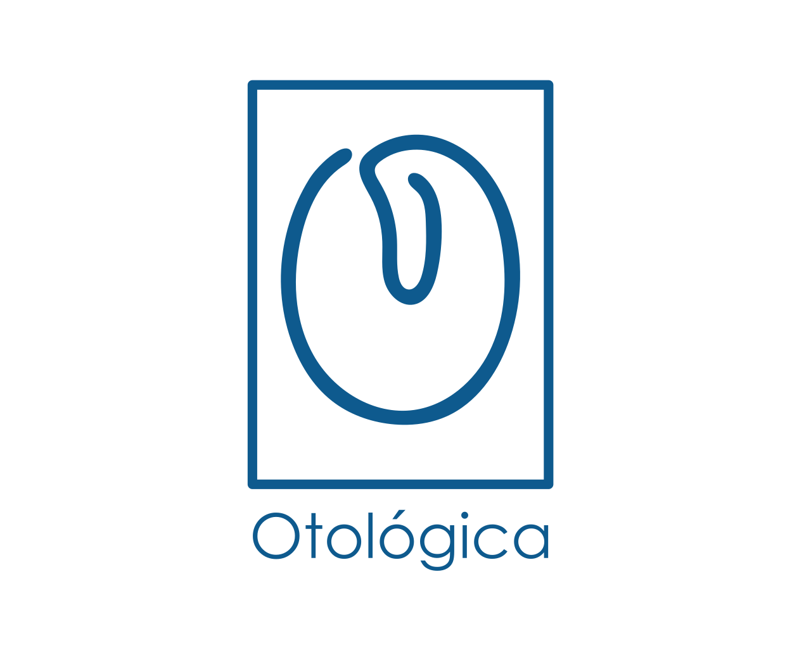

SEJA BEM-VINDO
A Otológica é mais que uma clínica dedicada a atender com excelência
Médicos com Mestrado, Doutorado e larga experiência profissional
Assessoria e consultoria médica na esfera judicial, civil e trabalhista
Exames complementares 100% supervisionados por médicos
Honorários justos e acessíveis
Honorários justos e acessíveis